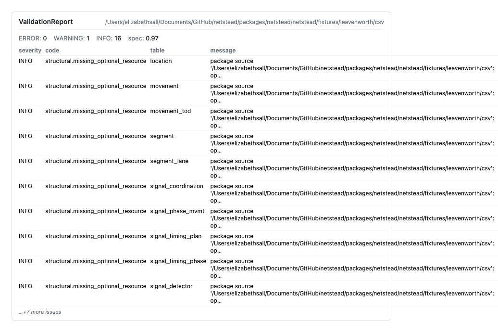

Validate a network and read the report ¶
When to use this ¶
You have a GMNS network — yours, a vendor’s, the output of an edit — and you need to know whether it conforms to the spec before downstream tools (assignment models, AI agents, regulators) touch it. Validation is fast (sub-second on Leavenworth, a few seconds on a regional network) and answers four questions at once: do all required tables exist, do columns match the schema, do foreign keys resolve, and are any of those FKs stale from a recent edit?
Quick example ¶
Validate the bundled Leavenworth fixture from the shell. Add --json to any netstead (or corral) CLI command and the output becomes a single machine-readable JSON document on stdout — pipe into jq, save to a file, feed to a script or AI agent. Default output is human-readable rich panels.
Expected — the command exits 0 because Leavenworth has no ERRORs. The issue list holds 16 INFO entries (structural.missing_optional_resource, one per optional GMNS table the fixture doesn’t ship) and nothing else. (node declares a foreign key into zone, but the fixture has no node.zone_id column, so there is nothing to verify and no finding is raised.)
{"header": "validation report: ...", "issues": [{"severity": "info", "code": "structural.missing_optional_resource", ...}, ...]}
The same call from Python returns a ValidationReport dataclass:
from netstead import Network
from netstead.fixtures import leavenworth
net = Network.from_source(leavenworth.csv_dir())
report = net.validate()
print(f"is_clean={report.is_clean} issues={len(report.issues)}")
Expected:
is_clean is True because no ERROR or WARNING fired; the INFO findings don’t break it. report.has_errors is False.
The CLI exits non-zero if any ERROR-severity finding fires, so it drops straight into a CI gate.
netstead quality) and don’t appear here.

Step-by-step ¶
1. Run validation ¶
net.validate() runs all four passes — structural, schema, FK, sync-state — and returns a ValidationReport. Toggle individual passes with boolean kwargs:
report = net.validate() # all four passes
report = net.validate(structural=False, sync_state=False) # schema + FK only
The same operation is available from the shell, with three output formats:
netstead validate <source> # human-readable summary
netstead validate <source> --all # ...one row per finding, nothing folded
netstead validate <source> --json # machine-readable
netstead validate <source> --html report.html # standalone HTML report
The human-readable table opens with a severity summary line (0 errors · 1 warning · 16 info)
and names the source once. Structural findings that differ only by resource — the sixteen
structural.missing_optional_resource lines above — fold into one row whose table column reads
16 tables and whose message lists the absent resources; --all expands them to a row each.
--json is never folded.
2. Read the report shape ¶
ValidationReport is a dataclass with five fields and properties you’ll touch:
| Field / property | Type | Description |
|---|---|---|
report.is_clean |
bool |
True iff no ERROR and no WARNING fired. INFO findings don’t break it. |
report.has_errors |
bool |
True iff ≥1 ERROR-severity issue fired. CI gates usually want if report.has_errors:. |
report.has_warnings |
bool |
True iff ≥1 WARNING-severity issue fired. |
report.spec_version |
str |
The GMNS spec version the validator ran against. |
report.issues |
list[Issue] |
One entry per finding. |
Each Issue is a small dataclass carrying severity, category, a stable code, a human-readable message, and the offending row coordinates when known:
@dataclass
class Issue:
severity: Severity # ERROR | WARNING | INFO
category: Category # SCHEMA | STRUCTURAL | FOREIGN_KEY | SYNC_STATE | DATA_QUALITY
code: str # stable identifier, e.g. "schema.required"
message: str # human-readable
table: str | None # table the finding is about
column: str | None # column, if applicable
row: int | None # row index, if applicable
fix_hint: str | None # what to do about it
extra: dict # adapter-specific payload (FK target, coordinates, ...)
3. Filter by severity ¶
Most CI gates want if errors: sys.exit(1). The CLI does this for you; from Python it’s a one-liner:
from corral.validation import Severity
errors = [i for i in report.issues if i.severity is Severity.ERROR]
warnings = [i for i in report.issues if i.severity is Severity.WARNING]
4. Filter by category ¶
Categories group findings by which validation pass produced them:
from corral.validation import Category
schema_problems = [i for i in report.issues if i.category is Category.SCHEMA]
fk_problems = [i for i in report.issues if i.category is Category.FOREIGN_KEY]
SCHEMA— field-level type / enum / required-column violations.STRUCTURAL— package-level shape problems (missing required table, missing required file).FOREIGN_KEY— cross-table integrity (link.from_node_idpoints at a node that doesn’t exist).SYNC_STATE— FKs that resolved on disk but were invalidated by an in-memory edit (see edit-with-rollback).DATA_QUALITY— rule-pack findings (high-speed-residential, lane-count-mismatch, etc.). Always WARNING / INFO; see customize the quality pack.
5. Common codes you’ll see ¶
Stable identifier strings let you script around specific findings without parsing free-text messages. Codes live inline at the top of each validator module (see corral.validation.structural, schema_check, foreign_keys, sync_state). The most common ones:
| Code | Category | Severity | What it means |
|---|---|---|---|
schema.required |
SCHEMA | ERROR | A required column is missing or null on a row. |
schema.enum |
SCHEMA | ERROR | A column value isn’t in the spec-defined enum set. |
schema.type |
SCHEMA | ERROR | A value doesn’t parse as the declared type. |
structural.missing_required_resource |
STRUCTURAL | ERROR | A required table (link, node) isn’t in the package. |
structural.missing_optional_resource |
STRUCTURAL | INFO | An optional spec table isn’t in the package. Leavenworth reports 16 of these. |
structural.missing_file |
STRUCTURAL | ERROR | A table is declared in the package descriptor but the file isn’t there. |
fk.missing_target |
FOREIGN_KEY | ERROR | FK points at a row that doesn’t exist in the parent table. |
fk.null_in_required_fk |
FOREIGN_KEY | ERROR | A required FK column is null on a row. |
fk.unverifiable |
FOREIGN_KEY | WARNING | The FK’s target table isn’t in the package, so it can’t be checked and the source column holds at least one value. An absent or all-null source column raises nothing. |
sync.fk_stale |
SYNC_STATE | ERROR | An edit invalidated an FK and no recompute ran. |
quality.high_speed_residential |
DATA_QUALITY | WARNING | Residential link with speed limit above the configured threshold. |
Common variations ¶
Default — full validation, rich console output
The most common path: run all four passes and read the panel.
JSON for scripts and AI agents
--json emits one parseable document on stdout — exits non-zero on ERROR.
Interactive map+table HTML report (--html)
Self-contained file you can email or upload to a docs site. The map pane on top plots each finding on the actual network geometry (Leaflet, vendored — no network calls when the report is opened); the filterable table below shows the same findings with severity, code, message, and fix hint. A “Resources” table above the findings lists every spec table with required / optional, present ✓ / ✗ and its row count, and the “Unlocated findings” block (collapsed by default) folds repeated structural findings into one line. For networks imported from OpenStreetMap, each finding’s popup carries a one-click “Edit in OSM” deep link to the iD editor.
Or programmatically:
from netstead.map import render_validation_html
open("report.html", "w").write(render_validation_html(net, report))
Requires pip install 'netstead[reports]'. When that extra is not
installed, --html still writes a file — the older corral
table-only HTML — and prints a stderr note pointing at the install
command.
Findings spreadsheet (--csv / --xlsx)
Flat one-row-per-finding spreadsheet — the right shape for triage in Excel, Google Sheets, or jq.
Columns: severity, category, code, table, column, row, message,
fix_hint, extra. The extra column is a JSON blob carrying
adapter-specific payload (FK target, OSM provenance, …).
--xlsx needs [reports]; --csv works on the lean install.
Just the failing tables
Useful for triaging which datasets need attention first.
Embed in a CI step
Non-zero exit code on ERROR — no extra wiring needed.
Pretty-print in a notebook
ValidationReport ships a _repr_html_; just leave it as the last cell expression.
Pitfalls ¶
- WARNING-level findings don’t fail CI. That’s intentional — data-quality findings are advisory. If you want them to be blocking, post-process:
if any(i.code.startswith("quality.") for i in report.issues): sys.exit(1). - Data-quality thresholds are configurable. A WARNING firing on your network may just mean the default threshold doesn’t match your context (e.g. metric vs imperial speed). See the customize the quality pack recipe.
sync.fk_staleonly fires after an edit. A freshly-loaded package can’t be out of sync with itself. If you see this in CI, an upstream step in the same process mutated the network.- The validator runs against the spec version embedded in the package. Override with
Network.from_source(path, spec_version="0.96")if the package is mislabeled.
See also ¶
- Architecture — the four-pass validator design.
- Edit with rollback —
sync.fk_staleis produced by edits without arecompute_fks. - API reference —
ValidationReport,Issue,Severity,Category.